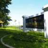
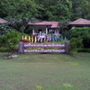
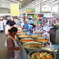

แหล่งท่องเที่ยวนครสวรรค์

อุทยานนกน้ำ อุทยานนกน้ำ เป็นส่วนหนึงของบึงบอระเพ็ด ดูแลโดยสถานีพัฒนาและส่งเสริมการอนุรักษ์พันธุ์สัตว์ป่าบึงบอระเพ็ดพื้นที่เขตห้ามล่าสัตว์ป่าบึงบอระเพ็ด
http://www.thailowernorth.com/lowernorth/main/attraction/view/356#.Wn3ekSXFLIU
สัมผัสความงามของทุ่งทานตะวัน ช่วง ธันวาคม 53 ถึง มกราคม 54 ดอกทานตะวัน เริ่มทะยอยบานตั้งแต่เดือนพฤศจิการยน จนไปถึงปลายเดือน ธันวาคม ทุ่งทานตะวัน กระจายอยู่ทั่วไปทุกตำบล
http://www.thailowernorth.com/lowernorth/main/attraction/view/401#.Wn3efiXFLIU

สวนรุกขชาติ 100 ปี กรมป่าไม้ (ซับสมบูรณ์) กรมป่าไม้หรือที่เรียกกันว่า สวนรุกขชาติซับสมบูรณ์ได้รับประกาศตั้งเมื่อปี พ.ศ. 2539
http://www.thailowernorth.com/lowernorth/main/attraction/view/398#.Wn3epyXFLIU

วันนี้อยากแนะนำ ตลาดสดขนาดใหญ่ที่ชาวนครสวรรค์เรียกกันว่า "ตลาดศรีนคร" เป็นศูนย์รวมพ่อค้าแม่ค้าของจังหวัด มีสินค้ามากมาย ผัก ผลไม้ อาหารสำเร็จรูป ของหวานก็มีนะครับ
http://www.thailowernorth.com/lowernorth/main/attraction/view/345#.Wn3exCXFLIU
|